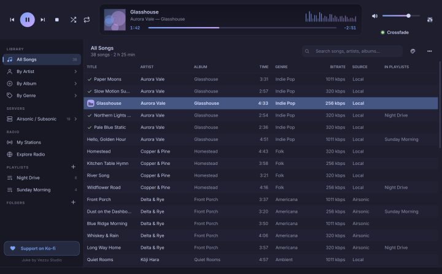
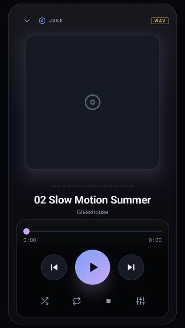
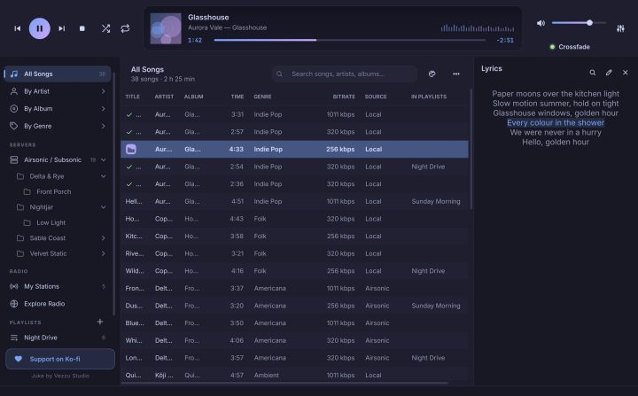
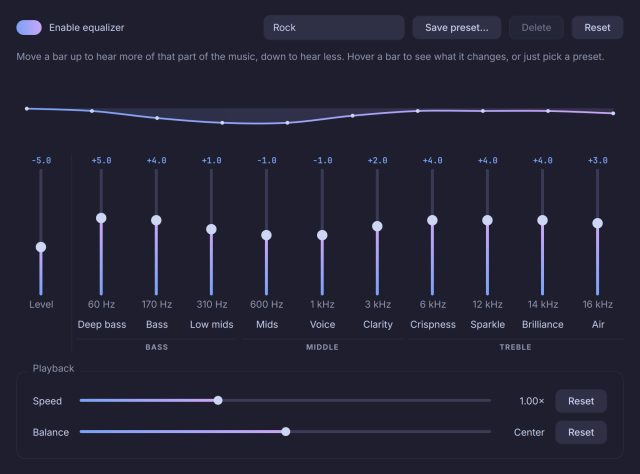
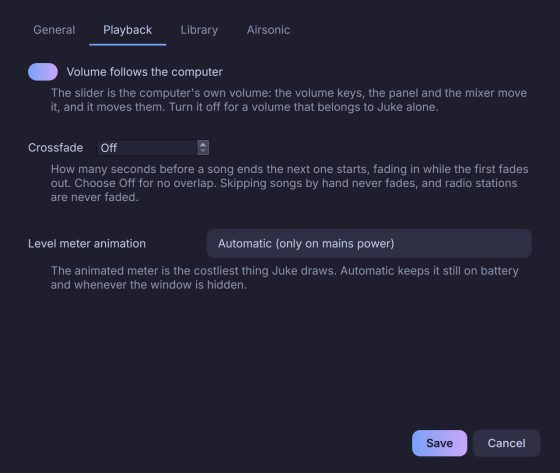

Juke 1.0
The manual — for Linux and Android
El manual — para Linux y Android
1
Welcome to Juke 1.0
Juke is a music player for your own music: the files on your computer or phone, the songs on your Airsonic / Subsonic server, and internet radio, all in one place that stays fast and light on the battery.
This manual is a book. The index on the side lists every chapter and section; you can read it from the first page or jump to what you need. It is also inside the app (press F1 on Linux, or Settings ▸ Manual on Android), so it is always with you and in your language.
What is new in 1.0
- Media keys and the desktop's controls. Play, pause, next and back work from your keyboard, headset and the media widget of your desktop. The volume slider is the computer's own volume, both ways.
- Crossfade. The next song comes in a few seconds before the current one ends. A light under the volume shows whether it is on.
- An equalizer anyone can use. Every bar says what it changes, and there are 35 presets.
- Lyrics in any language. Several free services are searched at once.
- Better playlists. A song is never added twice, you are told when it is already there, and the same menu takes it out.
- It knows what can play. Songs on an offline server or a disconnected drive turn grey with a note.
- Marks on the list. Bars dance beside the song that is playing and a green ✓ marks what already played.
- A manual inside the app, with an index, in English and Spanish.
How this manual is written
Words in italics are names you see on screen: menus, buttons, tabs. Keys are written like Ctrl + E. Parts that only apply to one system say so in the title: Linux for the computer app, Android for the phone and tablet app. Everything else is the same on both.
2
Installing and updating
Installing on Linux
Juke is one file, an AppImage, with everything inside (Python, Qt, libVLC). There is nothing else to install.
- Download
Juke-x86_64.AppImagefrom the latest release on GitHub (about 190 MB). - Allow it to run: right-click the file ▸ Properties ▸ Allow executing, or in a terminal
chmod +x Juke-x86_64.AppImage. - Open it. The first time it runs, Juke adds itself to your applications menu, with its icon. It only touches your own user account, and you can undo it in Settings ▸ General.
In one line: curl -fsSL https://vezzulab.github.io/juke/install.sh | sh.
What it needs: x86_64 Linux with glibc 2.35 or newer (Ubuntu 22.04, Debian 12, Fedora 36 or newer), PulseAudio or PipeWire for sound, and FUSE 2 (libfuse2) or the option --appimage-extract-and-run.
Installing from the source code
Juke needs libVLC on the system. Then pip install -e . inside the folder and run juke. To add the launcher and icon to your menu: juke --install-desktop (and --uninstall-desktop to remove them). Files given on the command line are played: juke song.flac.
Installing on Android
- Download
Juke-<version>.apkfrom the latest release on GitHub (about 3 MB). - Open the file. Android asks you to allow Install unknown apps for your browser or file manager, once.
- Juke needs Android 8 or newer, on a phone or a tablet.
The first time it opens, Juke asks permission to read your music. Say yes, or the library will be empty.
Updating
Juke looks for new versions when it opens and every 30 minutes while it is open. If there is one, it shows which version you have, which one is out and what changed, and you choose: Update now, Later or Skip this version. The download is checked against its SHA-256 before anything is replaced. You can turn the check off in Settings, and check by hand from the ⋯ menu ▸ Check for updates….
If the AppImage is in a folder you can write to, Update now replaces it in place and offers to restart. Otherwise Juke tells you where to download the new file.
On Android, Juke downloads the new APK, checks it and hands it to Android's installer. The first time you allow Install unknown apps for Juke.
If you have Juke 0.3 or any earlier version, it will offer 1.0 by itself the same way. Your library, playlists and settings are kept.
3
A tour of the window

Juke has three panes:
- Top: the player. Previous, play / pause, next and stop; shuffle and repeat; the display with the cover, the title, the time bar and the level meter; the volume with the Crossfade light under it; and the equalizer button.
- Left: the sidebar. Your sources: Library (all songs, by artist, album and genre), Servers, Radio, Playlists and Folders. When a phone or tablet is plugged in, a Devices section appears.
- Centre: the songs. A table with the title, artist, album, time, genre, bitrate, source and the playlists each song is in. Click a column to sort; click again to reverse; a third time to go back to the natural order.
Above the table there is the search box (Ctrl + F), the palette button for colour themes, and the ⋯ menu with everything else: Show (Favorites, Recently played, Current Queue), Find duplicates, Settings, Check for updates, Send feedback, View log and this manual.

Juke on Android has four tabs along the bottom (a side rail on a tablet): Library (your music, by folders), Server (your Airsonic / Subsonic server), Radio and Settings. Tap the player bar to open the big player, with the cover, the time bar and the controls.
The song that is playing
The song that is playing has a small badge with moving bars beside its title. A green ✓ marks the songs that already played since you opened Juke. Songs that cannot be played right now are grey (see Songs that are not available).
The song that is playing is highlighted in the list. Songs that cannot be played right now are grey.
4
Your music
The library
Add your music folders in Settings ▸ Library (or with the button on the empty library). Juke reads them in the background, at low priority, and only re-reads the files that changed. It stays fast with tens of thousands of songs: searching, sorting and filtering never wait for the whole library.
Every time you come back to the window, Juke quietly checks for songs that were added, moved or deleted. You can turn Look for changes when Juke opens off in Settings ▸ Library.
Browse your music under Library: All Songs, By Artist, By Album and By Genre. Type in the search box to filter by title, artist, album or genre.
Juke lists the music on your card or in the phone's storage, by folders, as you keep it. Phones without a card show the internal storage. Tap a folder to open it; the back button goes up one level. Use the sort button to order folders and songs from A to Z or from Z to A.
Favorites and recent songs
Right-click a song ▸ Mark as favorite. Show your favorites, the songs you played recently and the current queue from the ⋯ menu ▸ Show.
Mark a song as a favorite from its menu. Your favorites are in the library.
Edit tags and covers
Right-click one song, or select several (Ctrl + A, Ctrl + click, Shift + click) ▸ Edit metadata…. Only the fields you change are written to the files. You can add, replace or remove the cover, or just drop an image on the window; it is stored inside the file. This works for songs on your computer; songs on a server cannot be edited.
Find duplicates
⋯ menu ▸ Find duplicates shows songs that are the same, either the same title, artist and album, or exactly the same file.
5
Folders of your own
Under Folders in the sidebar, Juke keeps your music the way you arrange it. There is no import step: whatever you do, it just happens.
- Click the + next to Folders (or
Ctrl+Shift+N) to make a folder. Put folders inside folders. - Drag songs into a folder from the list, or drop files and whole folders from your file manager onto the sidebar. Dropped folders keep their layout.
- With a folder open, drop songs straight onto its list. Files and folders from your file manager, or songs from the library, go in the open folder: there is no need to aim at the folder in the sidebar. The same works on an open playlist. While you drag, the list is framed and says where the songs will go.
- Right-click a folder to rename, duplicate or delete it, to sort what is inside (A→Z, Z→A, by number, newest, oldest), or to play it, shuffle it or add it to the queue.
- Deleting a folder takes its songs out of Juke. The files stay on your disk. Juke never moves, renames or deletes your music files.
Music.juke
Juke creates a folder called Music.juke inside your Music folder. Open it and you find folders.db (how things are organized), a Folders directory with the same tree as shortcuts to your songs, and a short README. That way your arrangement is visible from any other program too.
If you delete or move a folder in your file manager, Juke notices as soon as you come back.
6
Playing music
The controls
| Control | What it does |
|---|---|
| ⏮ Previous | Goes back to the song before. If more than 3 seconds have played, it restarts the song first. After you pick a song from the middle of a list, it goes up the list. |
| ⏯ Play / pause | Plays or pauses. |
| ⏭ Next | Goes to the next song. |
| ⏹ Stop | Stops. Nothing is playing and the marks beside the song disappear. |
| 🔀 Shuffle | Plays the list in a random order: every song once, none twice in a row. Turn it off and the list continues in its own order from the current song. |
| 🔁 Repeat | Off, repeat the whole list, or repeat one song. |
Click or drag the time bar to jump to another point. Double-click a song, or select it and press Enter, to play it from the list.
The queue
Right-click a song ▸ Play next puts it right after the current song. Add to queue puts it at the end. The queue is temporary and independent: when it is empty, the list you started from continues. See it all under Current Queue (⋯ menu ▸ Showin the player): what is playing, what you queued, and what follows.
If you take a song out of the playlist or folder that is playing, it also leaves the queue; a song you put in waits at the end.
Crossfade
Crossfade brings the next song in while the current one fades out, so there is no silence between them.
Under the volume there is a light with the word Crossfade: green when it is on, grey when it is off. Click it to turn it on or off; it comes back with the seconds it had last (5 the first time). To choose how many seconds (1 to 12), open Settings ▸ Playback.
Turn it on and choose the seconds in Settings.
Crossfade only happens when a song ends by itself. If you skip a song by hand it changes at once, and radio stations are never faded. Songs shorter than a few seconds more than the crossfade are not overlapped.
Volume
The volume slider is the computer's own volume: the volume keys of your keyboard, the panel's volume and the mixer move it, and moving it moves them. The speaker button mutes. If you prefer a volume that belongs to Juke alone, turn off Volume follows the computer in Settings ▸ Playback.
Use the volume keys of the phone. Juke follows the system volume.
Keeping the computer awake
While a song or a station is playing, Juke asks the desktop not to put the computer to sleep and not to turn the screen off, so a laptop does not fall asleep in the middle of a party. It lets go as soon as you pause or stop, and the computer sleeps as usual again. You can turn it off with Keep the computer awake while music plays in Settings ▸ Playback. Closing the lid still follows your power settings: if the laptop must keep playing with the lid closed, set that in your desktop's power options.
Keyboard and media keys
Play, pause, stop, next and previous work from the media keys of your keyboard or headset, from the media widget of your desktop (GNOME, KDE and the rest), and from tools such as playerctl. The Play key also pauses when a song is playing. The shortcuts are in the chapter Keyboard shortcuts.
The lock screen and headphones
Juke keeps playing with the screen off. The player card on the lock screen, the notification, and the buttons of headsets and Bluetooth devices work; tapping the notification opens Juke, and the system can resume what was playing.
Speed and balance
In the equalizer window (see The equalizer), under Playback: Speed from 0.5× to 2× and Balance between left and right. Balance needs PulseAudio or PipeWire and a stereo stream; it is disabled otherwise.
The equalizer is in the player or in Settings.
7
Playlists
Make a playlist
Click the + next to Playlists (or Ctrl + N), type a name and press Save. Or right-click songs ▸ Add to playlist ▸ New playlist… to make one already holding those songs. Right-click a playlist to rename or delete it. Playlists survive rescans and server syncs.
Open a song's menu ▸ Add to playlist ▸ New playlist…, or add it to one you already have.
Add and remove songs
Right-click one or more songs ▸ Add to playlist. In that menu every playlist shows what it holds:
- ✓ Name: all the selected songs are already in it. Choose it again to take them out.
- ◐ Name: some of the songs are in it. Choose it to add the ones that are missing.
- Name with no mark: none are in it. Choose it to add them.
A song that is already in a playlist is never added twice; Juke tells you "That song is already in…". You can also drag songs from the list onto a playlist in the sidebar.
Inside a playlist, right-click ▸ Remove from playlist takes the selected songs out. Playlists made before 1.0 may hold a song twice; you can remove each copy on its own.
Every song in the library also shows, in the In playlists column, the names of the playlists that hold it.
In the menu of a song, the playlists that already hold it are marked; choose one again to take the song out. A song is never added twice to the same playlist.
8
Servers: Airsonic and Subsonic
Juke can play the music on your own server: Airsonic, Airsonic-Advanced, Subsonic, Navidrome and anything that speaks the same protocol. Songs are streamed directly; nothing is downloaded first.
Connect to your server
Open Settings ▸ AirsonicSettings ▸ the server section and fill in the server address (for example http://your-server:4040), your user and your password. Press Test connection. Then Sync Airsonic imports the server's library. Use https:// when you can.
Browse the server under Servers by folders, exactly as it shows them, or by artist, album and genre. A library of 6,000 songs syncs in about 8 seconds. Songs you finish are reported back to the server (scrobbled).
Songs that are not available
A song on a server needs the internet (or your network) and the server answering. A local song needs its file, which may live on a NAS or a drive that is not plugged in.
When a song cannot be played right now:
- It turns grey, and the Source column says Go online (the server does not answer) or Not connected (the drive or network folder is not there).
- Hover it to see why.
- If you try to play it, Juke tells you why and, for a server, asks again in case it is back.
- A list or queue passes over such songs instead of stopping.
Juke checks when it opens, when you come back to the window, when the computer goes on or off the network, and when a song of the server fails. When the connection returns, the grey goes away by itself and Juke tells you once.
9
Internet radio
Under Radio: My Stations (yours) and Explore Radio (the community directory).
- Explore Radio: search by name or pick a tag. ♥ saves a station; ▶ tunes in.
- Add station by URL…: paste any address. Juke shows Searching for an audio signal… while it works it out. It accepts a stream (
.mp3,.aac,.ogg,.m3u8), an Icecast or Shoutcast address, a.plsor.m3uplaylist, or a web page that contains a player. A page with several stations offers them all. Name and icon come from the station. - On the air: the display shows LIVE, the station and the song that is playing, when the station sends it.
- Stations move. Stations change their address all the time. A saved station remembers where it came from and, when it moves, Juke follows it and remembers the new address.
Stations that need a login or use protected streams are not supported.
10
Lyrics
See the lyrics
A panel on the right opens by itself when the song that is playing has lyrics, and stays shut when it has none. Synced lyrics light up the line being sung. Juke reads the lyrics you saved, a .lrc file next to the song, and the lyrics inside the file's tags.

Find lyrics
Right-click a song ▸ Find lyrics…. Juke searches several free services at once: LRCLIB, NetEase Cloud Music and lyrics.ovh. Together they cover English, Spanish, Portuguese, Chinese, Japanese, Korean, Arabic, Hindi and many more languages.
- The title is cleaned of "(feat. …)", "[Remastered]" and similar, in any script, and "Artist - Song" is understood.
- Results are sorted with the best match first, synced ones before plain ones. The same song by another artist (a cover) can show up; check the artist before using it.
- If a service is busy, Juke asks again and tells you which did not answer.
- What you found is kept for a few days, so repeating a search is instant and works without internet.
In the results, choose one and press Use. Only the song's name, artist, album and length are sent.
Add your own
Right-click a song ▸ Add lyrics…: paste them, or import a .lrc file (lines like [01:23.45] words, which makes them follow the song). Old files in other encodings (GBK, Shift-JIS, EUC-KR…) are read correctly, and right-to-left languages are shown the right way.
Automatic search
In Settings ▸ Library, Search lyrics online looks for songs that have no lyrics, by itself, as they start to play. It is off by default.
Karaoke
On Android the lyrics screen has a Karaoke mode: big lines, and a countdown into each phrase.
11
The equalizer
Open it with Ctrl + E or the button on the right of the player.

Open the equalizer from the player.
You do not need to be a sound engineer. Move a bar up to hear more of that part of the music, down to hear less. Or just pick a preset.
What each bar changes
| Bar | Name | What it is |
|---|---|---|
| 60 Hz | Deep bass | The rumble you feel in your chest: kick drums, sub-bass, 808s. Too much makes it boomy. |
| 170 Hz | Bass | Punch and warmth: the bass guitar and the body of the kick. |
| 310 Hz | Low mids | The fullness of voices and guitars. Too much sounds muddy, too little thin. |
| 600 Hz | Mids | The core of most instruments. Too much sounds boxy. |
| 1 kHz | Voice | Where singers and snare drums sit. Raise it to hear the words better. |
| 3 kHz | Clarity | Detail and bite. Too much is harsh and tiring. |
| 6 kHz | Crispness | The "s" sounds and the hi-hats. Too much hisses. |
| 12 kHz | Sparkle | Cymbals and shimmer. Raise it for a brighter sound. |
| 14 kHz | Brilliance | The sheen on top of the music. |
| 16 kHz | Air | The open feeling at the very top. |
The bars are grouped as Bass, Middle and Treble. The curve above the bars shows the sound you are shaping.
An equalizer for each song
The equalizer you set in the window is the general one, for every song. Any song can have its own instead: right-click it ▸ Equalizer for this song and choose a preset, one of your own presets, or The equalizer as it is now. Select several songs first (Ctrl + A, Ctrl + click, Shift + click) and the same menu gives them all the same equalizer at once.
- General equalizer (default) in that menu takes the song's own curve away. A ✓ shows what the selected songs have.
- When a song with its own equalizer plays, the equalizer window says so, and what you change there is kept for that song only. Use the general equalizer goes back.
- A song with its own curve is always shaped by it, even if the general equalizer is off. The next song, if it has none, plays with the general one again.
- The song's tooltip in the list shows which equalizer it has.
Level (preamp)
The first bar, Level, is the overall level of the equalizer. If the sound distorts after you raise a band, lower it. Presets set it for you, so a boost never makes the sound break up.
Presets
Thirty-five ready-made curves: Flat, Rock, Pop, Jazz, Classical, Electronic, Heavy Metal, Techno, Hip-Hop, R&B, Dance, Acoustic, Blues, Country, Reggae, Latin, Dembow, Reggaeton, Salsa, Merengue, Bachata, Cumbia, Afrobeat, K-Pop, Vocal, Speech / Podcast, Live, and fixes for the place or the way you listen: Bass Boost, Bass Reducer, Treble Boost, Treble Reducer, Loudness, Small Speakers, Headphones and Night (quiet).
Move a bar and the preset becomes Custom. Save preset… keeps your own curve under a name; Delete removes it. Reset goes back to Flat. The equalizer stays on when the song changes.
12
Looks and language
- Dark, light or like your desktop: Settings ▸ General ▸ Theme, or
Ctrl+Tto switch. - Twenty colour themes (ten light, ten dark) from the palette button next to the ⋯ menu. All are checked for legibility.
- Language: English or Spanish, in Settings ▸ General. It changes right away, including this manual.
- The level meter in the display is decorative (a moving meter, not an analyser). Settings ▸ Playback lets it move automatically only on mains power, always, or never.
- Colors: Settings ▸ Colors has the same twenty themes, dark and light.
- Language: English or Spanish, in Settings.
13
Phones and tablets
Plug an Android phone or tablet in with a USB cable and, on the device, choose File transfer. It appears under Devices in the sidebar.
- Drag songs, or whole folders, onto the device to copy them.
- Right-click songs ▸ Send to the device.
- You can see what is on the device, remove songs from it, and cancel a transfer in progress.
- When you finish, use the eject button beside the device before you unplug it.
Juke only copies music files and never changes your library.
14
Settings
Open them with Ctrl + , or from the ⋯ menu. There are four tabs:

| Tab | What is in it |
|---|---|
| General | Language, theme, Check for updates automatically, Show Juke in the applications menu. |
| Playback | Keep the computer awake while music plays, Volume follows the computer, Crossfade (seconds, or off) and the level meter. |
| Library | Your music folders, Look for changes when Juke opens and Search lyrics online. |
| Airsonic | The server address, user and password, and Test connection. |
Settings has the language, the colors, lyrics and update options, Rescan, the equalizer, and a Help section with Send feedback, the app's log (private details hidden) and Support on Ko-fi.
15
Updates, feedback and privacy
Feedback
Send feedback… and View log… are in the ⋯ menu (Settings ▸ Help on Android). A report opens as a new issue on GitHub for you to review before sending. Your home folder, passwords and server address are hidden first. Juke sends nothing by itself.
Privacy
Juke has no accounts, no telemetry and no analytics. It connects only to:
| What | When |
|---|---|
| Your Airsonic / Subsonic server | Only if you set one up. |
api.github.com | When it opens and every 30 minutes, to look for a new version, if you leave the check on. Only the program name and version are sent. |
| Radio Browser and the stations | Only when you open Explore Radio, add a station or tune in. |
lrclib.net, music.163.com, api.lyrics.ovh | Only when you press Find lyrics…, or if you turned on Search lyrics online. They get the song's name, artist, album and length. |
Your music, playlists and settings are always yours and stay on your device.
Where things are stored
Your library is a database in ~/.local/share/juke, the settings in ~/.config/juke and the covers in ~/.cache/juke. The log is juke.log. Your folders are described in Music.juke, inside your Music folder.
Everything stays inside the app's own storage on the phone. Uninstalling Juke removes it.
16
Keyboard shortcuts
| Shortcut | Action |
|---|---|
Space | Play / pause |
Enter or double-click | Play the selected song |
Ctrl + → / ← | Next / previous |
| Media keys | Play, pause, stop, next, previous |
Ctrl + F | Search |
Ctrl + N | New playlist |
Ctrl + Shift + N | New folder |
Ctrl + E | Equalizer |
Ctrl + L | Show / hide lyrics |
Ctrl + T | Switch light / dark |
Ctrl + , | Settings |
F1 | This manual |
Ctrl + Q | Quit |
17
When something goes wrong
There is no sound. Check that PulseAudio or PipeWire is running and that the volume is not muted. If you turned off Volume follows the computer, check Juke's own volume too.
My music does not show. Add the folder in Settings ▸ Library; Juke indexes in the background and the status bar shows the progress.Check that you gave Juke permission to read your music.
The media keys do nothing. Close any other player that was opened earlier; the keys go to the last one that announced itself. Juke announces itself to the desktop when it opens.Make sure no other player took over the headset buttons.
Songs are grey. The server does not answer or the drive is not connected. Go online or connect the drive; Juke notices by itself.
Find lyrics says nothing was found. The song may not be in the free services under that spelling. Try "Artist - Song" in the title, or add the lyrics yourself (see Lyrics).
A radio station stopped. Stations move; Juke follows them when it can. Try Explore Radio for the same station.
Still stuck? Use Send feedback…: the report includes the log with your private details hidden.
18
About Juke
Juke is made by Vezzu Studio. It is free to use, for any purpose, on as many computers and devices as you own. The source is published so it can be read and checked; the full terms are in the Juke License 1.0. The software of others that Juke includes keeps its own licence, listed in NOTICE.md.
If Juke is useful to you, you can support it on Ko-fi from the button in the sidebar or in Settings.
Thank you for listening.
1
Bienvenido a Juke 1.0
Juke es un reproductor para tu propia música: los archivos de tu computadora o de tu teléfono, las canciones de tu servidor Airsonic / Subsonic y la radio por internet, todo en un solo lugar que se mantiene rápido y cuida la batería.
Este manual es un libro. El índice del costado lista cada capítulo y cada sección; puedes leerlo desde la primera página o saltar a lo que necesitas. También está dentro de la app (pulsa F1 en Linux, o Ajustes ▸ Manual en Android), así que siempre lo tienes contigo y en tu idioma.
Qué hay de nuevo en 1.0
- Teclas multimedia y controles del escritorio. Reproducir, pausar, siguiente y anterior funcionan desde tu teclado, tus auriculares y el widget multimedia de tu escritorio. El control de volumen es el volumen de la computadora, en ambos sentidos.
- Crossfade. La siguiente canción entra unos segundos antes de que termine la actual. Una luz bajo el volumen muestra si está activo.
- Un ecualizador que cualquiera puede usar. Cada barra dice qué cambia, y hay 35 presets.
- Letras en cualquier idioma. Se buscan en varios servicios gratuitos a la vez.
- Mejores listas. Una canción nunca se agrega dos veces, te avisa cuando ya está, y el mismo menú la quita.
- Sabe qué se puede reproducir. Las canciones de un servidor sin conexión o de un disco desconectado se ven en gris con una nota.
- Marcas en la lista. Unas barras bailan junto a la canción que suena y una ✓ verde marca lo que ya sonó.
- Un manual dentro de la app, con índice, en español e inglés.
Cómo está escrito este manual
Las palabras en cursiva son nombres que ves en pantalla: menús, botones, pestañas. Las teclas se escriben así: Ctrl + E. Las partes que solo valen para un sistema lo dicen en el título: Linux para la app de computadora, Android para la de teléfono y tableta. Todo lo demás es igual en las dos.
2
Instalar y actualizar
Instalar en Linux
Juke es un solo archivo, un AppImage, con todo adentro (Python, Qt, libVLC). No hay nada más que instalar.
- Descarga
Juke-x86_64.AppImagede la última versión en GitHub (unos 190 MB). - Permite que se ejecute: clic derecho en el archivo ▸ Propiedades ▸ Permitir ejecutar, o en una terminal
chmod +x Juke-x86_64.AppImage. - Ábrelo. La primera vez, Juke se agrega solo a tu menú de aplicaciones, con su icono. Solo toca tu propia cuenta de usuario, y puedes deshacerlo en Ajustes ▸ General.
En una línea: curl -fsSL https://vezzulab.github.io/juke/install.sh | sh.
Lo que necesita: Linux x86_64 con glibc 2.35 o más nueva (Ubuntu 22.04, Debian 12, Fedora 36 o más nuevos), PulseAudio o PipeWire para el sonido, y FUSE 2 (libfuse2) o la opción --appimage-extract-and-run.
Instalar desde el código fuente
Juke necesita libVLC en el sistema. Luego pip install -e . dentro de la carpeta y ejecuta juke. Para agregar el lanzador y el icono a tu menú: juke --install-desktop (y --uninstall-desktop para quitarlos). Los archivos que le des en la línea de comandos se reproducen: juke cancion.flac.
Instalar en Android
- Descarga
Juke-<versión>.apkde la última versión en GitHub (unos 3 MB). - Abre el archivo. Android te pide permitir Instalar apps desconocidas para tu navegador o administrador de archivos, una sola vez.
- Juke necesita Android 8 o más nuevo, en teléfono o tableta.
La primera vez que se abre, Juke pide permiso para leer tu música. Di que sí, o la biblioteca estará vacía.
Actualizar
Juke busca versiones nuevas al abrirse y cada 30 minutos mientras está abierto. Si hay una, te muestra qué versión tienes, cuál salió y qué cambió, y tú eliges: Actualizar ahora, Más tarde u Omitir esta versión. La descarga se verifica con su SHA-256 antes de reemplazar nada. Puedes apagar la búsqueda en Ajustes, y buscar a mano desde el menú ⋯ ▸ Buscar actualizaciones….
Si el AppImage está en una carpeta donde puedes escribir, Actualizar ahora lo reemplaza en su lugar y ofrece reiniciar. Si no, Juke te dice dónde descargar el archivo nuevo.
En Android, Juke descarga el APK nuevo, lo verifica y se lo entrega al instalador de Android. La primera vez permites Instalar apps desconocidas para Juke.
Si tienes Juke 0.3 o una versión anterior, te ofrecerá la 1.0 solo, de la misma manera. Tu biblioteca, tus listas y tus ajustes se conservan.
3
Un recorrido por la ventana
Juke tiene tres paneles:
- Arriba: el reproductor. Anterior, reproducir / pausa, siguiente y detener; aleatorio y repetir; la pantalla con la portada, el título, la barra de tiempo y el medidor de nivel; el volumen con la luz de Crossfade debajo; y el botón del ecualizador.
- Izquierda: la barra lateral. Tus fuentes: Biblioteca (todas las canciones, por artista, álbum y género), Servidores, Radio, Listas y Carpetas. Cuando conectas un teléfono o una tableta aparece una sección Dispositivos.
- Centro: las canciones. Una tabla con el título, artista, álbum, tiempo, género, bitrate, origen y las listas en que está cada canción. Haz clic en una columna para ordenar; otra vez para invertir; una tercera para volver al orden natural.
Sobre la tabla está el cuadro de búsqueda (Ctrl + F), el botón de paleta para los temas de color y el menú ⋯ con todo lo demás: Mostrar (Favoritas, Reproducidas recientemente, Cola actual), Buscar duplicados, Ajustes, Buscar actualizaciones, Enviar comentarios, Ver registro y este manual.
Juke en Android tiene cuatro pestañas abajo (una barra lateral en tableta): Biblioteca (tu música, por carpetas), Servidor (tu servidor Airsonic / Subsonic), Radio y Ajustes. Toca la barra del reproductor para abrir el reproductor grande, con la portada, la barra de tiempo y los controles.
La canción que suena
La canción que suena tiene una pequeña insignia con barras que se mueven junto a su título. Una ✓ verde marca las canciones que ya sonaron desde que abriste Juke. Las canciones que no se pueden reproducir ahora se ven en gris (mira Canciones que no están disponibles).
La canción que suena aparece resaltada en la lista. Las canciones que no se pueden reproducir ahora se ven en gris.
4
Tu música
La biblioteca
Agrega tus carpetas de música en Ajustes ▸ Biblioteca (o con el botón de la biblioteca vacía). Juke las lee en segundo plano, con baja prioridad, y solo vuelve a leer los archivos que cambiaron. Se mantiene rápido con decenas de miles de canciones: buscar, ordenar y filtrar nunca esperan a toda la biblioteca.
Cada vez que vuelves a la ventana, Juke revisa en silencio si hay canciones agregadas, movidas o borradas. Puedes apagar Buscar cambios al iniciar Juke en Ajustes ▸ Biblioteca.
Explora tu música en Biblioteca: Todas las canciones, Por artista, Por álbum y Por género. Escribe en el cuadro de búsqueda para filtrar por título, artista, álbum o género.
Juke lista la música de tu tarjeta o del almacenamiento del teléfono, por carpetas, como la tienes guardada. Los teléfonos sin tarjeta muestran el almacenamiento interno. Toca una carpeta para abrirla; el botón atrás sube un nivel. Con el botón de ordenar puedes poner carpetas y canciones de A a Z o de Z a A.
Favoritas y canciones recientes
Clic derecho en una canción ▸ Marcar como favorita. Muestra tus favoritas, las canciones que reprodujiste hace poco y la cola actual desde el menú ⋯ ▸ Mostrar.
Marca una canción como favorita desde su menú. Tus favoritas están en la biblioteca.
Editar etiquetas y portadas
Clic derecho en una canción, o selecciona varias (Ctrl + A, Ctrl + clic, Mayús + clic) ▸ Editar metadatos…. Solo se escriben en los archivos los campos que cambias. Puedes agregar, reemplazar o quitar la portada, o simplemente soltar una imagen sobre la ventana; se guarda dentro del archivo. Esto vale para canciones de tu computadora; las de un servidor no se pueden editar.
Buscar duplicados
El menú ⋯ ▸ Buscar duplicados muestra canciones repetidas: las que tienen el mismo título, artista y álbum, o exactamente el mismo archivo.
5
Tus propias carpetas
Bajo Carpetas en la barra lateral, Juke guarda tu música como tú la acomodas. No hay paso de importar: lo que hagas, simplemente sucede.
- Haz clic en el + junto a Carpetas (o
Ctrl+Mayús+N) para crear una carpeta. Pon carpetas dentro de carpetas. - Arrastra canciones a una carpeta desde la lista, o suelta archivos y carpetas enteras desde tu administrador de archivos sobre la barra lateral. Las carpetas que sueltas conservan su estructura.
- Con una carpeta abierta, suelta las canciones directamente sobre su lista. Archivos y carpetas de tu administrador de archivos, o canciones de la biblioteca, entran en la carpeta abierta: no hace falta apuntar a la carpeta de la barra lateral. Lo mismo vale en una lista de reproducción abierta. Mientras arrastras, la lista se enmarca y dice adónde irán las canciones.
- Clic derecho en una carpeta para renombrarla, duplicarla o borrarla, ordenar lo que tiene (A→Z, Z→A, por número, más nuevas, más viejas), o reproducirla, mezclarla o agregarla a la cola.
- Borrar una carpeta saca sus canciones de Juke. Los archivos se quedan en tu disco. Juke nunca mueve, renombra ni borra tus archivos de música.
Music.juke
Juke crea una carpeta llamada Music.juke dentro de tu carpeta Música. Ábrela y encuentras folders.db (cómo está organizado todo), un directorio Folders con el mismo árbol como accesos a tus canciones, y un README corto. Así tu organización también se ve desde cualquier otro programa.
Si borras o mueves una carpeta en tu administrador de archivos, Juke se da cuenta en cuanto vuelves.
6
Reproducir música
Los controles
| Control | Qué hace |
|---|---|
| ⏮ Anterior | Vuelve a la canción de antes. Si ya sonaron más de 3 segundos, primero reinicia la canción. Después de elegir una canción del medio de una lista, sube por la lista. |
| ⏯ Reproducir / pausa | Reproduce o pausa. |
| ⏭ Siguiente | Pasa a la siguiente canción. |
| ⏹ Detener | Detiene. No suena nada y las marcas junto a la canción desaparecen. |
| 🔀 Aleatorio | Reproduce la lista en orden al azar: cada canción una vez, ninguna dos veces seguidas. Si lo apagas, la lista sigue en su orden desde la canción actual. |
| 🔁 Repetir | Apagado, repetir toda la lista o repetir una canción. |
Haz clic o arrastra la barra de tiempo para saltar a otro punto. Haz doble clic en una canción, o selecciónala y pulsa Enter, para reproducirla desde la lista.
La cola
Clic derecho en una canción ▸ Reproducir a continuación la pone justo después de la actual. Añadir a la cola la pone al final. La cola es temporal e independiente: cuando queda vacía, sigue la lista desde la que empezaste. Verla toda en Cola actual (menú ⋯ ▸ Mostraren el reproductor): lo que suena, lo que agregaste y lo que sigue.
Si sacas una canción de la lista o carpeta que está sonando, también sale de la cola; una canción que agregas espera al final.
Crossfade
El crossfade mete la siguiente canción mientras la actual se va apagando, para que no haya silencio entre ellas.
Bajo el volumen hay una luz con la palabra Crossfade: verde cuando está activo, gris cuando está apagado. Haz clic para encenderlo o apagarlo; vuelve con los segundos que tenía la última vez (5 la primera). Para elegir cuántos segundos (de 1 a 12), abre Ajustes ▸ Reproducción.
Enciéndelo y elige los segundos en Ajustes.
El crossfade solo ocurre cuando una canción termina sola. Si saltas una canción a mano, cambia al instante, y las emisoras de radio nunca llevan fundido. Las canciones de pocos segundos más que el crossfade no se mezclan.
Volumen
El control de volumen es el volumen de la computadora: las teclas de volumen de tu teclado, el volumen del panel y el mezclador lo mueven, y moverlo los mueve a ellos. El botón del altavoz silencia. Si prefieres un volumen que sea solo de Juke, apaga El volumen sigue al de la computadora en Ajustes ▸ Reproducción.
Usa las teclas de volumen del teléfono. Juke sigue el volumen del sistema.
Mantener la computadora despierta
Mientras suena una canción o una emisora, Juke le pide al escritorio que no duerma la computadora ni apague la pantalla, para que un portátil no se duerma en plena fiesta. Lo suelta en cuanto pausas o detienes, y la computadora vuelve a dormirse con normalidad. Puedes apagarlo con Mantener la computadora despierta mientras suena música en Ajustes ▸ Reproducción. Cerrar la tapa sigue lo que digan tus ajustes de energía: si el portátil debe seguir sonando con la tapa cerrada, configúralo en las opciones de energía de tu escritorio.
Teclado y teclas multimedia
Reproducir, pausar, detener, siguiente y anterior funcionan con las teclas multimedia de tu teclado o de tus auriculares, con el widget multimedia de tu escritorio (GNOME, KDE y los demás) y con herramientas como playerctl. La tecla Play también pausa cuando suena una canción. Los atajos están en el capítulo Atajos de teclado.
La pantalla de bloqueo y los auriculares
Juke sigue sonando con la pantalla apagada. La tarjeta del reproductor en la pantalla de bloqueo, la notificación y los botones de auriculares y dispositivos Bluetooth funcionan; tocar la notificación abre Juke, y el sistema puede retomar lo que sonaba.
Velocidad y balance
En la ventana del ecualizador (mira El ecualizador), bajo Reproducción: Velocidad de 0,5× a 2× y Balance entre izquierda y derecha. El balance necesita PulseAudio o PipeWire y una señal estéreo; si no, está desactivado.
El ecualizador está en el reproductor o en Ajustes.
7
Listas de reproducción
Crear una lista
Haz clic en el + junto a Listas (o Ctrl + N), escribe un nombre y pulsa Guardar. O clic derecho en canciones ▸ Añadir a la lista ▸ Nueva lista… para crear una que ya tenga esas canciones. Clic derecho en una lista para renombrarla o borrarla. Las listas sobreviven a los reescaneos y a las sincronizaciones del servidor.
Abre el menú de una canción ▸ Añadir a la lista ▸ Nueva lista…, o agrégala a una que ya tengas.
Agregar y quitar canciones
Clic derecho en una o más canciones ▸ Añadir a la lista. En ese menú cada lista muestra lo que tiene:
- ✓ Nombre: todas las canciones seleccionadas ya están. Elígela otra vez para sacarlas.
- ◐ Nombre: algunas de las canciones están. Elígela para agregar las que faltan.
- Nombre sin marca: ninguna está. Elígela para agregarlas.
Una canción que ya está en una lista nunca se agrega dos veces; Juke te dice «Esa canción ya está en…». También puedes arrastrar canciones de la lista hasta una lista de la barra lateral.
Dentro de una lista, clic derecho ▸ Quitar de la lista saca las canciones seleccionadas. Las listas hechas antes de la 1.0 pueden tener una canción dos veces; puedes quitar cada copia por separado.
Cada canción de la biblioteca también muestra, en la columna En listas, los nombres de las listas que la tienen.
En el menú de una canción, las listas que ya la tienen aparecen marcadas; elige una otra vez para sacar la canción. Una canción nunca se agrega dos veces a la misma lista.
8
Servidores: Airsonic y Subsonic
Juke puede reproducir la música de tu propio servidor: Airsonic, Airsonic-Advanced, Subsonic, Navidrome y todo lo que hable el mismo protocolo. Las canciones se reproducen directamente; no se descarga nada antes.
Conectar tu servidor
Abre Ajustes ▸ AirsonicAjustes ▸ la sección del servidor y escribe la dirección del servidor (por ejemplo http://tu-servidor:4040), tu usuario y tu contraseña. Pulsa Probar conexión. Luego Sincronizar Airsonic importa la biblioteca del servidor. Usa https:// cuando puedas.
Explora el servidor en Servidores por carpetas, tal como las muestra, o por artista, álbum y género. Una biblioteca de 6.000 canciones se sincroniza en unos 8 segundos. Las canciones que terminas se informan al servidor (scrobble).
Canciones que no están disponibles
Una canción de un servidor necesita internet (o tu red) y que el servidor responda. Una canción local necesita su archivo, que puede estar en un NAS o en un disco que no está conectado.
Cuando una canción no se puede reproducir ahora:
- Se pone gris, y la columna Origen dice Conéctate (el servidor no responde) o Sin conexión (el disco o la carpeta de red no está).
- Pasa el ratón para ver por qué.
- Si intentas reproducirla, Juke te dice por qué y, si es de un servidor, vuelve a preguntar por si ya regresó.
- Una lista o cola pasa de largo esas canciones en vez de detenerse.
Juke lo revisa al abrirse, cuando vuelves a la ventana, cuando la computadora entra o sale de la red y cuando falla una canción del servidor. Cuando la conexión vuelve, el gris se quita solo y Juke te avisa una vez.
9
Radio por internet
En Radio: Mis emisoras (las tuyas) y Explorar radio (el directorio de la comunidad).
- Explorar radio: busca por nombre o elige una etiqueta. ♥ guarda una emisora; ▶ la sintoniza.
- Añadir emisora por URL…: pega cualquier dirección. Juke muestra Buscando una señal de audio… mientras lo averigua. Acepta una señal directa (
.mp3,.aac,.ogg,.m3u8), una dirección Icecast o Shoutcast, una lista.plso.m3u, o una página web que tenga un reproductor. Una página con varias emisoras te las ofrece todas. El nombre y el icono salen de la emisora. - En el aire: la pantalla muestra EN VIVO, la emisora y la canción que suena, cuando la emisora la envía.
- Las emisoras se mueven. Las emisoras cambian de dirección todo el tiempo. Una emisora guardada recuerda de dónde vino y, cuando se mueve, Juke la sigue y recuerda la dirección nueva.
Las emisoras que piden inicio de sesión o usan señales protegidas no se pueden reproducir.
10
Letras
Ver la letra
Un panel a la derecha se abre solo cuando la canción que suena tiene letra, y se queda cerrado cuando no la tiene. Las letras sincronizadas iluminan la línea que se está cantando. Juke lee la letra que guardaste, un archivo .lrc junto a la canción y la letra que traiga el archivo en sus etiquetas.
Buscar la letra
Clic derecho en una canción ▸ Buscar letra…. Juke busca en varios servicios gratuitos a la vez: LRCLIB, NetEase Cloud Music y lyrics.ovh. Juntos cubren inglés, español, portugués, chino, japonés, coreano, árabe, hindi y muchos idiomas más.
- El título se limpia de «(feat. …)», «[Remastered]» y parecidos, en cualquier escritura, y se entiende «Artista - Canción».
- Los resultados se ordenan con la mejor coincidencia primero, las sincronizadas antes que las planas. Puede aparecer la misma canción de otro artista (una versión); revisa el artista antes de usarla.
- Si un servicio está ocupado, Juke vuelve a preguntar y te dice cuál no respondió.
- Lo que encontró se guarda unos días, así que repetir una búsqueda es instantáneo y funciona sin internet.
En los resultados, elige uno y pulsa Usar. Solo se envían el nombre, el artista, el álbum y la duración de la canción.
Agregar la tuya
Clic derecho en una canción ▸ Añadir letra…: pégala, o importa un archivo .lrc (líneas como [01:23.45] palabras, que hacen que siga a la canción). Los archivos antiguos en otras codificaciones (GBK, Shift-JIS, EUC-KR…) se leen bien, y los idiomas de derecha a izquierda se muestran como corresponde.
Búsqueda automática
En Ajustes ▸ Biblioteca, Buscar letras en línea busca por sí solo las canciones que no tienen letra, cuando empiezan a sonar. Viene apagado.
Karaoke
En Android la pantalla de letras tiene un modo Karaoke: líneas grandes y una cuenta regresiva antes de cada frase.
11
El ecualizador
Ábrelo con Ctrl + E o con el botón a la derecha del reproductor.
Abre el ecualizador desde el reproductor.
No hace falta ser ingeniero de sonido. Mueve una barra hacia arriba para oír más de esa parte de la música, hacia abajo para oír menos. O simplemente elige un preset.
Qué cambia cada barra
| Barra | Nombre | Qué es |
|---|---|---|
| 60 Hz | Graves profundos | El retumbar que sientes en el pecho: bombo, sub-graves, 808. Demasiado suena retumbante. |
| 170 Hz | Graves | Pegada y calidez: el bajo y el cuerpo del bombo. |
| 310 Hz | Medios bajos | El cuerpo de voces y guitarras. Demasiado suena turbio, muy poco suena delgado. |
| 600 Hz | Medios | El centro de casi todos los instrumentos. Demasiado suena encajonado. |
| 1 kHz | Voz | Donde están los cantantes y la caja. Súbela para entender mejor la letra. |
| 3 kHz | Claridad | Detalle y mordiente. Demasiado es áspero y cansa. |
| 6 kHz | Nitidez | Las «s» y los platillos de la batería. Demasiado silba. |
| 12 kHz | Brillo | Platillos y destellos. Súbelo para un sonido más brillante. |
| 14 kHz | Lustre | El lustre sobre la música. |
| 16 kHz | Aire | La sensación abierta de lo más alto. |
Las barras están agrupadas en Graves, Medios y Agudos. La curva sobre las barras muestra el sonido que estás moldeando.
Un ecualizador para cada canción
El ecualizador que ajustas en la ventana es el general, para todas las canciones. Cualquier canción puede tener el suyo propio: clic derecho ▸ Ecualizador para esta canción y elige un preajuste, uno tuyo, o El ecualizador como está ahora. Selecciona varias canciones antes (Ctrl + A, Ctrl + clic, Mayús + clic) y el mismo menú les da a todas el mismo ecualizador de una vez.
- Ecualizador general (por defecto) en ese menú le quita a la canción su curva propia. Una ✓ muestra lo que tienen las canciones seleccionadas.
- Cuando suena una canción con ecualizador propio, la ventana del ecualizador lo dice, y lo que cambies ahí se guarda solo para esa canción. Usar el ecualizador general vuelve atrás.
- Una canción con curva propia siempre se moldea con ella, aunque el ecualizador general esté apagado. La siguiente canción, si no tiene, suena otra vez con el general.
- El texto emergente de la canción en la lista muestra qué ecualizador tiene.
Nivel (preamp)
La primera barra, Nivel, es el nivel general del ecualizador. Si el sonido se distorsiona al subir una banda, bájalo. Los presets lo ajustan solos, así que un realce nunca hace que el sonido se rompa.
Presets
Treinta y cinco curvas listas: Plano, Rock, Pop, Jazz, Clásica, Electrónica, Heavy Metal, Techno, Hip-Hop, R&B, Baile, Acústica, Blues, Country, Reggae, Latina, Dembow, Reggaetón, Salsa, Merengue, Bachata, Cumbia, Afrobeat, K-Pop, Voces, Voz / Podcast, En vivo, y ajustes para el lugar o la manera de escuchar: Graves potentes, Menos graves, Agudos brillantes, Menos agudos, Realce a bajo volumen, Altavoces pequeños, Auriculares y Noche (silencioso).
Mueve una barra y el preset pasa a Personalizado. Guardar preset… conserva tu propia curva con un nombre; Borrar la quita. Restablecer vuelve a Plano. El ecualizador sigue encendido cuando cambia la canción.
12
Aspecto e idioma
- Oscuro, claro o como tu escritorio: Ajustes ▸ General ▸ Tema, o
Ctrl+Tpara cambiar. - Veinte temas de color (diez claros, diez oscuros) desde el botón de paleta junto al menú ⋯. Todos están revisados para que se lean bien.
- Idioma: español o inglés, en Ajustes ▸ General. Cambia al instante, incluido este manual.
- El medidor de nivel de la pantalla es decorativo (un medidor animado, no un analizador). Ajustes ▸ Reproducción deja que se mueva solo con corriente, siempre, o nunca.
- Colores: Ajustes ▸ Colores tiene los mismos veinte temas, oscuros y claros.
- Idioma: español o inglés, en Ajustes.
13
Teléfonos y tabletas
Conecta un teléfono o tableta Android con un cable USB y, en el aparato, elige Transferencia de archivos. Aparece en Dispositivos en la barra lateral.
- Arrastra canciones, o carpetas enteras, al dispositivo para copiarlas.
- Clic derecho en canciones ▸ Enviar a el dispositivo.
- Puedes ver lo que hay en el dispositivo, quitar canciones de él y cancelar una transferencia en curso.
- Al terminar, usa el botón de expulsar junto al dispositivo antes de desconectarlo.
Juke solo copia archivos de música y nunca cambia tu biblioteca.
14
Ajustes
Ábrelos con Ctrl + , o desde el menú ⋯. Hay cuatro pestañas:
| Pestaña | Qué tiene |
|---|---|
| General | Idioma, tema, Buscar actualizaciones automáticamente, Mostrar Juke en el menú de aplicaciones. |
| Reproducción | Mantener la computadora despierta mientras suena música, El volumen sigue al de la computadora, Crossfade (segundos, o apagado) y el medidor de nivel. |
| Biblioteca | Tus carpetas de música, Buscar cambios al iniciar Juke y Buscar letras en línea. |
| Airsonic | La dirección del servidor, el usuario y la contraseña, y Probar conexión. |
Ajustes tiene el idioma, los colores, las opciones de letras y de actualizaciones, Volver a escanear, el ecualizador y una sección de Ayuda con Enviar comentarios, el registro de la app (con los datos privados ocultos) y Apoyar en Ko-fi.
15
Actualizaciones, comentarios y privacidad
Comentarios
Enviar comentarios… y Ver registro… están en el menú ⋯ (Ajustes ▸ Ayuda en Android). Un reporte se abre como una nueva incidencia en GitHub para que lo revises antes de enviarlo. Tu carpeta personal, tus contraseñas y la dirección de tu servidor se ocultan primero. Juke no envía nada por sí solo.
Privacidad
Juke no tiene cuentas, telemetría ni analíticas. Solo se conecta a:
| Qué | Cuándo |
|---|---|
| Tu servidor Airsonic / Subsonic | Solo si configuras uno. |
api.github.com | Al abrirse y cada 30 minutos, para buscar una versión nueva, si dejas la búsqueda activada. Solo se envían el nombre del programa y la versión. |
| Radio Browser y las emisoras | Solo cuando abres Explorar radio, añades una emisora o sintonizas. |
lrclib.net, music.163.com, api.lyrics.ovh | Solo cuando pulsas Buscar letra…, o si activaste Buscar letras en línea. Reciben el nombre, el artista, el álbum y la duración de la canción. |
Tu música, tus listas y tus ajustes siempre son tuyos y se quedan en tu dispositivo.
Dónde se guarda cada cosa
Tu biblioteca es una base de datos en ~/.local/share/juke, los ajustes están en ~/.config/juke y las portadas en ~/.cache/juke. El registro es juke.log. Tus carpetas se describen en Music.juke, dentro de tu carpeta Música.
Todo se queda dentro del almacenamiento propio de la app en el teléfono. Al desinstalar Juke se borra.
16
Atajos de teclado
| Atajo | Acción |
|---|---|
Espacio | Reproducir / pausa |
Enter o doble clic | Reproducir la canción seleccionada |
Ctrl + → / ← | Siguiente / anterior |
| Teclas multimedia | Reproducir, pausar, detener, siguiente, anterior |
Ctrl + F | Buscar |
Ctrl + N | Nueva lista |
Ctrl + Mayús + N | Nueva carpeta |
Ctrl + E | Ecualizador |
Ctrl + L | Mostrar / ocultar la letra |
Ctrl + T | Cambiar entre claro y oscuro |
Ctrl + , | Ajustes |
F1 | Este manual |
Ctrl + Q | Salir |
17
Cuando algo sale mal
No hay sonido. Revisa que PulseAudio o PipeWire estén funcionando y que el volumen no esté silenciado. Si apagaste El volumen sigue al de la computadora, revisa también el volumen propio de Juke.
Mi música no aparece. Agrega la carpeta en Ajustes ▸ Biblioteca; Juke indexa en segundo plano y la barra de estado muestra el avance.Revisa que le diste a Juke permiso para leer tu música.
Las teclas multimedia no hacen nada. Cierra cualquier otro reproductor que se abrió antes; las teclas van al último que se anunció. Juke se anuncia al escritorio cuando se abre.Asegúrate de que ningún otro reproductor se quedó con los botones de los auriculares.
Hay canciones en gris. El servidor no responde o el disco no está conectado. Conéctate o conecta el disco; Juke se da cuenta solo.
Buscar letra dice que no encontró nada. Puede que la canción no esté en los servicios gratuitos con esa escritura. Prueba «Artista - Canción» en el título, o agrega la letra tú mismo (mira Letras).
Una emisora de radio dejó de sonar. Las emisoras se mueven; Juke las sigue cuando puede. Busca la misma emisora en Explorar radio.
¿Sigue sin funcionar? Usa Enviar comentarios…: el reporte incluye el registro con tus datos privados ocultos.
18
Acerca de Juke
Juke lo hace Vezzu Studio. Es gratis para usarlo con cualquier fin, en todos los ordenadores y dispositivos que tengas. El código está publicado para poder leerlo y comprobarlo; los términos completos están en la Licencia de Juke 1.0. El software de otros que Juke incluye conserva su propia licencia, indicada en NOTICE.md.
Si Juke te es útil, puedes apoyarlo en Ko-fi desde el botón de la barra lateral o en Ajustes.
Gracias por escuchar.